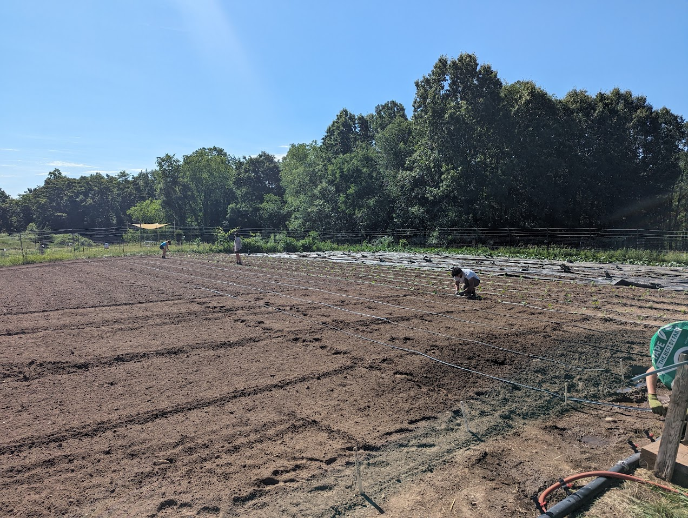

Overview
Irrigation supplies water to crops when rainfall does not meet their needs. The method, timing, and amount of water applied affect crop growth, soil conditions, weed growth, and disease risk.

Irrigation, Weeds, and Disease Management
- Leaf wetness
- Overhead irrigation wets the leaves, which can increase the risk of diseases. Drip irrigation generally keeps leaves dry by applying water near the soil surface.
- Soil moisture
- Excessive irrigation can cause waterlogging and can increase chances of root diseases.
- Weed growth
- Watering the entire soil surface can encourage weeds between crop rows. Targeted irrigation can reduce the area receiving water.
- Pathogen movement
- Splashing water, runoff, or contaminated irrigation water can spread pathogens.
Comparing Irrigation Methods
Drip Irrigation
Applies water through emitters near the crop's root zone.
Benefits
- Targets water near crop roots
- Generally keeps foliage dry
- Can reduce evaporation and wind-drift losses
- Can limit watering between rows which limits weed growth
Trade-offs
- Requires installation and setup
- Emitters can clog.
- Lines can interfere with cultivation
- May not wet the entire seedbed evenly for germination
- Standard drip systems are not designed for overhead frost protection
Sprinkler and Overhead Irrigation
Sprays water above the crop and across the soil surface.
Benefits
- Can cover broad areas
- Can help germinate direct-seeded crops
- Some systems are relatively straightforward to set up
- Properly designed and operated systems can provide frost protection
Trade-offs
- Wind can reduce coverage uniformity
- Water can be lost through drift and evaporation
- Leaf wetness can increase some disease risks
- Watering between rows can encourage weeds
Irrigation at the Campus Farm
Drip Irrigation
- Supply lines feed water into drip tape.
- The tape has an emitter every 8 inches.
- One line of tape is used for each crop row.
- The flow rate is 1 gallon per minute per 100 feet of tape.
Overhead Irrigation in Hoop Houses
- Sprays water above the growing area
- Can help maintain surface moisture for germinating direct-seeded crops
- Also waters areas where weeds may germinate
- Requires attention to leaf wetness and humidity
Planning an Irrigation System
Land, Soil, and Crop Layout
- Slope: Account for runoff, erosion, and pressure differences. System suitability depends on the terrain and design.
- Soil properties: Match application rates and watering frequency to infiltration and water-holding capacity.
- Root depth and spacing: Place irrigation so that water reaches the crop's active root zone.
- Foliage sensitivity: Consider crop susceptibility to diseases associated with leaf wetness.
- Equipment access: Position lines to accommodate cultivation and harvesting.
Water Availability and Quality
- Identify the water source: municipal supply, well, pond, stream, or another source.
- Determine available flow rate and operating pressure.
- Assess filtration and maintenance needs for particles, mineral deposits, or iron that could clog emitters.
- Evaluate salinity and sodium-related risks to crops and soil.
- Consider microbial water quality as part of the farm's food-safety practices.
Climate and Weather
- Adjust watering to rainfall, temperature, and crop demand.
- Consider humidity and airflow when managing leaf wetness.
- Account for wind effects on sprinkler coverage and water loss.
Automation, Maintenance, and Economics
- Balance emitter spacing, pressure, and flow to provide uniform irrigation.
- Consider timers, soil-moisture sensors, and rain shut-off control.
- Compare installation costs, maintenance, pumping energy, and labor requirements.
- Inspect the system for leaks, clogged emitters, and uneven watering.
Sources and Supporting Materials
- Lecture 4
- Lecture 7
- missouri.edu
- aces.edu